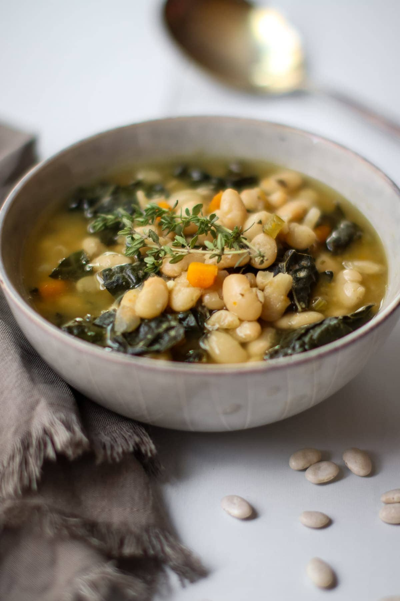

White Bean and Kale Soup

Description
This is a woderful soup for when the weather starts to get cold outside. The beans and
the sausage give it enough heartiness to be a whole meal by itself, but it is still
brothy and won't leave you feeling like you want to take a nap after.
Go ahead and take that nap though. I won't judge.
Ingredients
- 2 carrots
- 2 celery stalks
- 6 cremini mushrooms
- 2 cloves garlic
- Half of a white onion
- 4 cups chopped kale
- 1 lb ground italian sausage
- 2 16 oz cans of white beans, drained and rinsed
- 4 cups chicken or vegetable stock
- 4 cups water
- 4 tbsp butter
- 1 tbsp vegetable oil
- 1 tsp oregeno
- 1/2 tsp red chili flakes
- 1 tsp Salt and pepper
Steps
- Heat a sauce pan over medium heat and add the oil. Break up the sausage and cook until it is browned, then draining the excess oil and placing the sausage off to the side.
- Do a rough chop of the carrots, garlic, onions, mushrooms and celery.
- In a large stock pot, melt the butter. When it is fully melted, add the onions and stir frequently until they are translucent.
- Add the carrots, mushrooms, garlic and celery to the pot, stirring frequently. Cook until carrots are a tiny bit tender, about 5 minutes.
- Add the water and stock to the pot, bringing it to a boil. Reduce the temperature and keep at a simmer.
- Add the remaining ingredients and allow everything to simmer for another 10 minutes.
- At this point, the soup is ready to be served. I recommend a bit of garlic bread to accompany it!